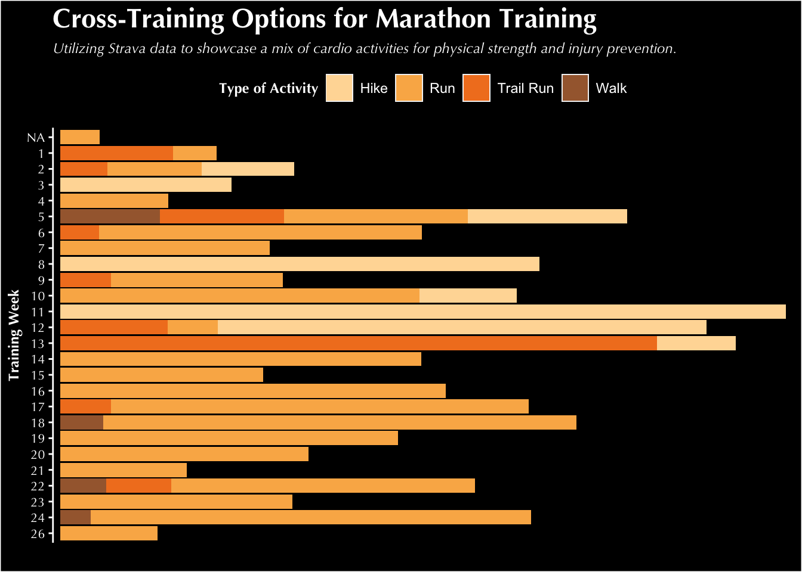

Code
#Loading Libraries ---
library(rStrava)
library(tidyverse)
library(dplyr)
library(paletteer) #for color palettes
library(patchwork)
library(magick)
library(ggpubr)
library(png)March 9, 2024
Project Repository Located Here
My infographic (seen below) is a representation of my Strava data during marathon training. I started on this journey because I wanted to look back at my last marathon training and asked myself: How should I train for my next marathon?! Luckily, I had recorded all of my running data with the public online media platform called Strava. Strava has allowed me to keep all of my data on running and cross-training, which has been amazing to keep track of and learn about as I go. By analyzing my Strava data, some more detailed questions I will pursue are: When in my training should I ramp up my weekly mileage? What days during the week should I expect longer distances/need to allocate more time to running on those days? And lastly, what types of activities should I do to cross-train? I like to stay active beyond running, and wanted to look back at some of the other activities I’d done to balance getting miles in without road running.
This data comes from my personal Strava data documented on the Strava web application. This application is a social network for tracking physical exercise via activities. Each logged data point represents an activity I have done; these activities range from running, hiking, surfing, skiing, walking, strength training, etc. In order to get this data from the public Strava app, I referenced the Strava API . This includes utilizing the {{rStrava}} package. This package allowed me to scrape my data from the public Strava website by creating a Strava application and using authentication. Details on the scraped activity data included where I completed the activity, the duration of the activity, the type of activity, the title of the activity, the distance I went, the day/month/year I did the activity, the number of kudos received, and essentially anything recorded in a single Strava activity that I have access to. Then, I filtered my activity data down to my time period of interest, which was May to October 2023 (the time I was training for the marathon).
My approach to this infographic is centered around one primary message: how to train for a marathon. This is represented by three pivotal themes: the training schedule, the expected distances to plan for, and cross-training considerations. In order to emphasize these three themes, I decided to select graphical forms that aligned with the message portrayal of these themes most clearly.
By breaking up my infographic into three parts, I wanted the information to be digestible and catch the reader at each section. To do this, I started with the calendar in the top third since this is likely the most pivotal information that a person training for a marathon will need. Then, the middle third highlights some high level weekly distances and includes specific outlier events within my data. The last third focuses on other complementary information for the individual who is training and if they are to consider cross-training in their larger marathon goals. This information is at the bottom because it is the least crucial/important when designing a marathon training plan. The approach to the training schedule was in the graphical form of a tile-like calendar. I chose this form because I wanted to clearly show peak days of the week with color that is easy to interpret. In this calendar, I am able to easily show that Thursdays, Fridays, and Sundays had the longest mile days, and Wednesdays and Saturdays typically had the least. This is a helpful way to inform someone training which days they can expect to have longer runs, shorter runs, and rest days.
The approach to the second theme, weekly expected distances, is in the form of a line chart. This was in order to compare total values across weeks during training. The goal of this graph was to showcase changes in training with a ramp up period and a tapering period. The line chart provides a clear way to showcase the trends in this data, and including annotations allowed me to highlight any outlier weeks in my training due to life transitions, vacations, off weeks, etc.
The approach to the third theme, cross-training considerations, was chosen to be in the form of a stacked bar chart. The colors in the bars of each training week allow the reader to have a clear visual of the different cross-training activities that are possible each week and where there are differences / changes across weeks. The bar chart provides a clear and concise option for viewing this type of data with colors emphasizing type of activity and bars emphasizing weekly trends.
The theme, colors, and typogrophy in my charts are focused on a bright contrast of an orange and black strava-related theme to emulate the branding of the app. I made sure to include color-blind friendly palettes when selecting the colors as to make this plot accessible to others. For my theme, I went with white text to stand out against the black background. I chose text that was big and bold and highlighted racing numbers, with the main/header font “League Spartan” and the small text font “Sanchez”.
To put my data into context, I added the Strava logo and icons of running throughout the infographic to showcase the main purpose: running! I also incorporated running phrases and a running track to capture the reader at the beginning and throughout the different sections of the infographic. When considering a DEI lens on my infographic, it is limited in its impact to larger communities (given I am representing my own personal data). I want to acknowledge that being able to track data via Strava is not fully accessible to all since it is a mobile and web application. In order to graph this data and represent my own information, I am fortunate to have that luxury. I am also fortunate to have the opportunity and time to dedicate to training for a marathon, something not all people have the privilege of doing.
#General Wrangling
##Creating a month name column ---
strava_activities$month_name <- month.name[strava_activities$month]
##Filtering to just timeframe of marathon training ---
filtered_strava_activities <- strava_activities %>%
filter(year == 2023 & month > 4 & month < 11)
#Additional Wrangling---
## making month_name a factor column
filtered_strava_activities$month_name <- factor(filtered_strava_activities$month_name,
levels = month.name)
## adding a training_week column with new numbers ---
filtered_strava_activities$training_week <-ifelse(filtered_strava_activities$week_number == 18, 1,
ifelse(filtered_strava_activities$week_number == 19, 2,
ifelse(filtered_strava_activities$week_number == 20, 3,
ifelse(filtered_strava_activities$week_number == 21, 4,
ifelse(filtered_strava_activities$week_number == 22, 5,
ifelse(filtered_strava_activities$week_number == 23, 6,
ifelse(filtered_strava_activities$week_number == 24, 7,
ifelse(filtered_strava_activities$week_number == 25, 8, ifelse(filtered_strava_activities$week_number == 26, 9,
ifelse(filtered_strava_activities$week_number == 27, 10,
ifelse(filtered_strava_activities$week_number == 28, 11,
ifelse(filtered_strava_activities$week_number == 29, 12,
ifelse(filtered_strava_activities$week_number == 30, 13,
ifelse(filtered_strava_activities$week_number == 31, 14,
ifelse(filtered_strava_activities$week_number == 32, 15,
ifelse(filtered_strava_activities$week_number == 33, 16,
ifelse(filtered_strava_activities$week_number == 34, 17,
ifelse(filtered_strava_activities$week_number == 35, 18,
ifelse(filtered_strava_activities$week_number == 36, 19,
ifelse(filtered_strava_activities$week_number == 37, 20,
ifelse(filtered_strava_activities$week_number == 38, 21,
ifelse(filtered_strava_activities$week_number == 39, 22,
ifelse(filtered_strava_activities$week_number == 40, 23,
ifelse(filtered_strava_activities$week_number == 41, 24,
ifelse(filtered_strava_activities$week_number == 42, 25,
ifelse(filtered_strava_activities$week_number == 43, 26,NA))))))))))))))))))))))))))
##Filtering to just runs ---
strava_runs <- filtered_strava_activities %>%
filter(sport_type == "Run" | sport_type == "TrailRun")
##Summing total miles for each training week and sport type ---
total_by_training_week <- filtered_strava_activities |>
group_by(sport_type, training_week) |>
summarize(total_miles_by_week = sum(total_miles))
##Calculating average weekly miles ---
avg_weekly_miles = round((sum(total_by_training_week$total_miles_by_week))/24, 2)
#Calculating total miles ran/hiked during training ---
sum_miles = round((sum(total_by_training_week$total_miles_by_week)), 2)
#For Calendar Plot
daily_totals <- filtered_strava_activities %>%
group_by(start_date_local) %>% #grouping by date
summarise(Num_Runs = n(), #getting the number of runs by date
Miles = sum(total_miles)) %>% #summing total miles by day
ungroup() %>% #ungrouping the data
mutate(wday = str_sub(weekdays(start_date_local), 1, 3), #creating placeholder column for weekdays
month_day = day(start_date_local), #creating column that is month days
month = month(start_date_local), #creating column that is months
week_increment = ifelse(month_day == 1 | wday == "Sun", 1, 0)) %>% #making week increments so sunday starts on week 0
group_by(month) %>% #grouping by month
mutate(week = cumsum(week_increment), #creating a week column
text_month = months(start_date_local)) %>% #creating a placeholder month name column
ungroup() #ungrouping data
wday_vec <- c("Sun", "Mon", "Tue", "Wed", "Thu", "Fri", "Sat") #creating list of days in week
daily_totals$wday <- factor(daily_totals$wday, levels = wday_vec) #adding days of week to weekday column
month_vec <- c("January", "February", "March", "April", "May", "June",
"July", "August", "September", "October", "November", "December") #creating list of months
daily_totals$text_month <- factor(daily_totals$text_month,
levels = month_vec) #adding month names to column using the month vector
# For Weekly Distances Plot
total_by_training_week2 <- filtered_strava_activities |>
filter(training_week != 26) %>% #filtering out week 26 since we only need up to week 24
group_by(training_week) %>% #grouping by training week
summarize(total_miles_by_week = round(sum(total_miles), 0)) #creating a new column of total miles per week#Plotting the training calendar---
ggplot(daily_totals, aes(x = wday, y = week)) + #selecting variables to plot
geom_tile(aes(fill = Miles), colour = "white") + #selecting a geom_tile graphical type to make a calendar
facet_wrap(~text_month, scales = "free") + #grouping by the month names
scale_y_reverse() + #reversing the order of the y axis
scale_fill_continuous(low = "white", high = "#FE6100", name = "Total Daily Miles Ran", breaks = c(0, 5,10,15,20,25,30, 35, 40)) + #adding color, legend title, and legend breaks
scale_x_discrete(position = "top") +
labs(x = "Training Week", y = "Day of the Month", title = "24 Weeks of Runs", subtitle = "Utilizing Strava data to understand daily peaks.
This graph indicates most mileage peak days are on Thursdays, Fridays, and Saturdays.
Most days off from training are generally Wednesdays and Saturdays. ") + #adding labels to plot
theme(plot.background = element_rect(fill = "black"), #specifying my theme
panel.background = element_blank(), #removing panel background
panel.border = element_blank(), #removing panel borders
strip.text = element_text(family = "sans", size = 8, color = "black"), #showing month names
panel.grid.major = element_line(color = "#2E3432FF"), #showing light gridlines to represent calendar tiles
panel.grid.minor = element_line(color = "#2E3432FF"), #showing light gridlines to represent calendar tiles
plot.title = element_text(family = "sans", face = "bold", size = 17, color = "white"), #defining plot title layout
plot.subtitle = element_text(family = "sans", face = "italic", size = 9, color = "white"), #defining plot subtitle layout
axis.title.x = element_text(family = "sans", size = 9, face = "bold", color = "white"), #defining x axis title layout
axis.text.x = element_text(family = "sans", size = 8, color = "white"), #defining x axis text layout
axis.text.y = element_text(family = "sans", size =8, color = "white"), #defining y axis text layout
legend.title = element_text(family = "sans", size = 8, color = "black"), #defining legend title layout
legend.text = element_text(family = "sans", size = 8, color = "black") #defining legend text layout
)#Plotting the weekly distances---
weekly_plot <- ggplot(total_by_training_week2) +
geom_segment(aes(x = training_week, xend = training_week, y = 0, yend = total_miles_by_week), color = "#fd7A40", size = 2) + #adding a segment line for training week
geom_point(aes(x = training_week, y = total_miles_by_week), #adding a point at the end of each segment line
color = "#fd7A40", size = 2.8) +
geom_text(aes(x = training_week, y = total_miles_by_week, label = total_miles_by_week), vjust = -1.8, hjust = 0.5, size = 3.5, color = "white") + #adding a label for the total miles by week at the end of the segment line
labs(x = "Training Week", y = "Total Miles", title = "Total Miles by Training Week", subtitle = "Utilizing Strava data to showcase the weekly mileage ramp-up and tapering period during training.") + #adding labels
scale_x_continuous(breaks = 1:24) + #adding all 24 weeks to the x axis
scale_y_continuous(expand = expansion(mult = c(0.1, 0.1))) + #adding spacing to the top of the y axis
theme(plot.background = element_rect(fill = "black"), #specifying my theme
panel.background = element_blank(), #removing panel background
panel.border = element_blank(), #removing panel borders
panel.grid.major = element_blank(), #removing panel grid
panel.grid.minor = element_blank(), #removing panel grid
plot.title = element_text(family = "Optima", face = "bold", size = 17, color = "white"), #defining plot title layout
plot.subtitle = element_text(family = "Optima", face = "italic", size = 9, color = "white"), #defining plot subtitle layout
axis.title.x = element_text(family = "Optima", size = 9, face = "bold", color = "white"), #axis text titles layout
axis.text.y=element_blank(), #removing y axis text
axis.ticks.y=element_blank(), #removing y axis ticks
axis.text.x = element_text(family = "Optima", size = 8, color = "white"), #x axis text values layout
# axis.text.y = element_text(family = "Optima", size = 8, color = "white"), #y axis text values layout
legend.title = element_text(family = "Optima", size = 9, face = "bold") #legend text layout
)
weekly_plot +
annotate( #adding annotation for the marathon
geom = "text",
x = 26,
y = 60,
label = "Marathon Week!",
size = 3,
color = "white",
hjust = "inward"
) +
annotate( #adding an arrow pointing to the marathon point
geom = "curve",
x = 24.5, xend = 24,
y = 58, yend = 45,
curvature = 0.01,
color = "white",
arrow = arrow(length = unit(0.3, "cm"))
) +
annotate( #adding annotation for the teton crest trail (outlier)
geom = "text",
x = 1,
y = 67,
label = "The week of my longest training run, the Teton Crest Trail, clocking in at 38 miles.",
size = 3,
color = "white",
hjust = "inward"
) +
annotate( #adding an arrow pointing to the tct point
geom = "curve",
x = 9, xend = 10.5,
y = 62, yend = 60,
curvature = 0.05,
color = "white",
arrow = arrow(length = unit(0.35, "cm"))
) +
annotate( #adding annotation for the outlier week for graduate school starting
geom = "text",
x = 21.5,
y = 51,
label = "First week of starting graduate school.",
size = 3,
color = "white",
hjust = "inward"
) +
annotate( #adding an arrow pointing to the graduate school week
geom = "curve",
x = 15, xend = 15,
y = 47, yend = 28,
curvature = 0,
color = "white",
arrow = arrow(length = unit(0.35, "cm"))
)#Creating barplot ---
weekly_distribution2 <- ggplot(total_by_training_week, aes(x = fct_rev(as.factor(training_week)), y = total_miles_by_week, fill = str_replace(sport_type, "TrailRun", "Trail Run"))) + #updating trail run to have a space and making training week a factor in order to reverse it on the axes
geom_col() + #defining a bar plot
scale_fill_paletteer_d("calecopal::canary") + #specifying the color scheme
labs(x = "Training Week", #adding labels to graph
y = "Total Distance (in miles)", fill = "Type of Activity", title = "Evaluating Total Weekly Training Peaks for Marathon Training", subtitle = "Utilizing Strava data to showcase a mix of cardio activities for physical strength and injury prevention.") +
coord_flip() + #flipping axes
scale_y_discrete() + #adding breaks to my y axis
theme(plot.background = element_rect(fill = "black"), #specifying my theme
panel.background = element_blank(), #removing panel background
panel.border = element_blank(), #removing panel border
panel.grid.major = element_blank(), #removing panel grids
panel.grid.minor = element_blank(), #removing panel grids
plot.title = element_text(family = "Optima", face = "bold", size = 17, color = "white"), #defining plot title layout
plot.subtitle = element_text(family = "Optima", face = "italic", size = 9, color = "white"), #defining plot subtitle layout
axis.title.y = element_text(family = "Optima", size = 9, face = "bold", color = "white"), #axis text titles layout
axis.text.y = element_text(family = "Optima", size = 8, color = "white"), #y axis text values layout
axis.text.x = element_blank(), #removing x axis text
axis.ticks.y = element_line(color = "white"), #making y axis ticks white
axis.line.y = element_line(color = "white"), #making y axis white
legend.title = element_text(family = "Optima", size = 9, face = "bold", color = "white"), #legend text layout
legend.background = element_rect(fill = "black"), #making legend background black
legend.text = element_text(color = "white"), #making legend text white
legend.position = "top" #adding legend to top
)
weekly_distribution2